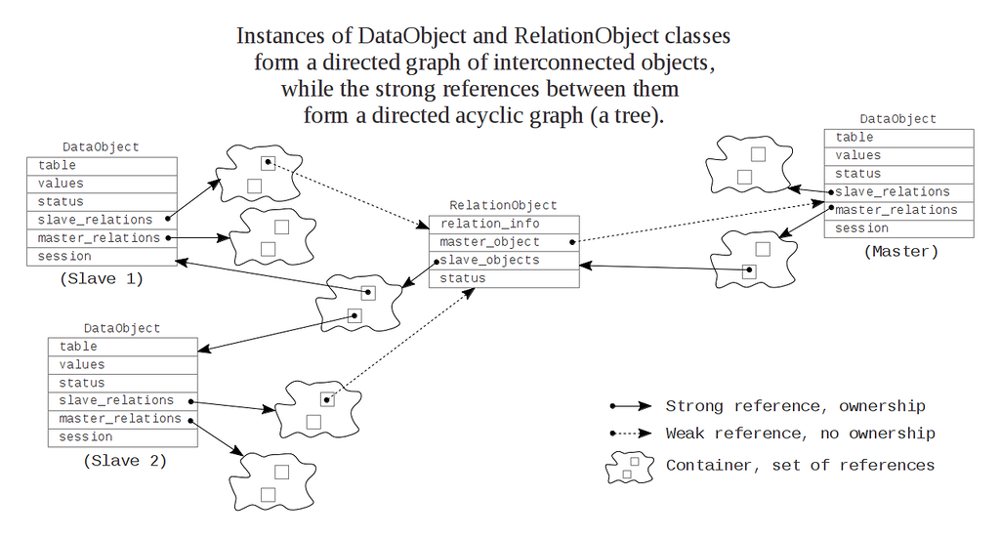

Here is my view on how one could implement the “1 to n” relation. Side “1” is the master table, whereas side “n” corresponds to the slave (child) table. I suppose, we want to manipulate the relation from both sides. From slave's point the relation would look like a single object property, possibly with ability to set/change/clear the object reference specified by the property. From master's point the same relation would be a collection-like property, providing us with the means to iterate over/add/delete object references from that collection. Since any changes made to one side of the relation must be instantly made available from the other side, we have two options:
Propagate the changes to all participants of the relation immediately. In this case the collection-like property mentioned above could be implemented using general-purpose container class, with the alteration methods overridden.
Introduce some kind of intermediate “instance-of-relation” object, which will own all of the information about the relation for just one instance of master object. In this case each call for properties from either side will fetch requested info from that intermediate object.
Choosing between the two involves answering several important questions:
How the instances of mapped classes should be created? Could we create an instance without saving it in the IdentityMap? How about creating a linked structure of newly created objects?
Could the instances of mapped classes be copied, at the same time retaining some knowledge one about each other, to propagate the changes? Or maybe we should have exactly one instance for each table record?
Who is responsible for object deletion in all possible cases?
In either case the are some features, that are usually present in any ORM-like solution. For example, the IdentityMap design pattern assumes you register all instances of mapped classes that should render their changes to the DB in some kind of registry. This is necessary to perform later the “flush” operation. Of course, this requires maintaining the record status. I found the “instance-of-relation” approach to be relatively easier to implement. Particularly, take a look at source files DataObject.h, DataObject.cpp, and the tests in TestDataObject.cpp (folder lib/orm/). YB.ORM library employs variant typed objects internally with statically typed “thin” wrappers on top. The DataObject class represents an instance of mapped class, where mapping rules are given in the metadata description. Such objects are always allocated in heap and are not copyable. They store the data values. They have a link to metadata information for the mapped table. Of course, current state is maintained within those objects, one of: New (a newly created object), Ghost (no object present, just an ID), Dirty (object is loaded and altered), Sync (object is loaded, no changes), ToBeDeleted (marked for deletion), Deleted (finally deleted). To support relations in which this class presents the “n” side, each of them has a set of pointers to instances of RelationObject class (slave_relations_ member). To support relations in which this class presents the “1” side, each of them also has a set of shared pointers to instances of RelationObject class (master_relations_ member).
The RelationObject class represents an instance of a relation. Such objects are always allocated in heap and are not copyable. They store and enumerate pointers to related DataObject instances: one pointer to master, and set of shared pointers to slaves. Thus they “own” slave DataObject instances, and the DataObject instances “own” (indirectly) all of the slave objects. Note, that RelationObject itself maintains something like state, to support lazy loading.
Some pics:
